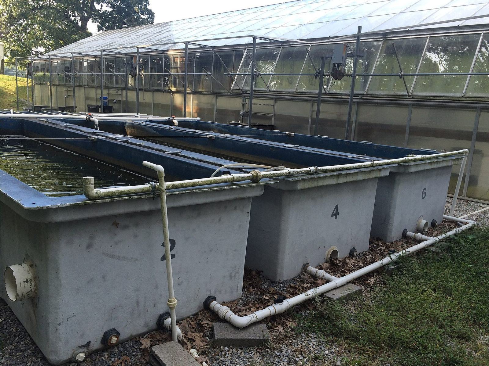

ورشة الاستزراع المائي الدائري مصنع بيولوجي يحدث أن يستخدم الماء. وهي تستهلك الكهرباء كلما كانت المضخات والنوافخ، وفي مناخات كثيرة المدافئ أو المبرّدات، قيد التشغيل. ويمكن أن تُفرَّغ من السمك في ليلة بانقطاع كهرباء، أو بدخول مرض، أو بفشل بسيط في الانتباه. وقبل أن يستثمر أحد، ليست الأسئلة العملية «هل تعمل الحلقة في صباح زيارة؟» فحسب، بل «كم تكلف التشغيل، وماذا يحدث حين يخطئ شيء؟».
تعرض هذه المقالة تلك الأسئلة في ثلاث مجموعات: الطاقة، والأمن الحيوي، وتكاليف التشغيل على نحو أوسع. وهي مكتوبة لمشترٍ أو جهة عامة قد تزور نانشا لاحقًا. وهي لا تقدّم أرقام كيلوواط-ساعة مخترعة لورشة نانشا، لأن تلك الأرقام لم تُنشر في السجل المستعمل هنا. لكنها تشرح لماذا يجب طرح الأسئلة، وكيف يمكن لزيارة عرض أن تجعلها عيانية.
الطاقة: التكلفة التي لا تنام
تحرّك المضخات الماء عبر المرشحات ثم عائدًا إلى الأحواض. وتبقي النوافخ أو معدات الأكسجين الأكسجين الذائب في نطاق آمن. وتضيف المرشحات الأسطوانية، ووحدات الأشعة فوق البنفسجية إن استُخدمت، والإضاءة، والمراقبة، كلها حمولة. وفي مناخ بارد يمكن أن يهيمن تسخين الماء على الفاتورة. وفي مناخ حار جاف يمكن أن يهيمن تبريد المبنى ونزع رطوبته بدلًا من ذلك. وفي الحالين، لا ينتهي دوام النظام حين يعود العاملون إلى بيوتهم. فالطاقة رفيق لنظم RAS على مدار الساعة على نحو ليست عليه لحوض مدّي.
ولذا ليس السؤال الأول الصحيح رقمًا سحريًا واحدًا، بل طريقة تفكير. كم كيلوواط-ساعة تُستخدم لكل كيلوغرام من السمك المنتج، في مناخ الموقع الفعلي، عند الكثافة ودرجة الحرارة اللتين يفترضهما التصميم فعلًا؟ وكم تبلغ حساسية ذلك الرقم لخطأ درجتين في خطة الحرارة، أو لمضاعفة التعرفة المحلية؟ وأي حصة من الحمولة ضرورية لدعم الحياة، وأي حصة راحة أو ملاءمة للمبنى؟ وبائع أو مضيف لا يستطيع حتى بحث شكل هذه الأسئلة ليس جاهزًا بعد لحديث استثمار جاد.
وطاقة الاحتياط جزء من تصميم الطاقة، لا ملحق. فإذا تعطل الشبكة، وجب أن تستمر التهوية والدوران ما دام يلزم لاستعادة الإمداد أو لنقل السمك. ومولّد لم يُختبر، أو خزان وقود فارغ، أو مفتاح تلقائي لم يُمرَّن أبدًا، حدث نفوق خفي. اسألوا متى كان آخر اختبار، وكم يمكن للاحتياط أن يعمل، ومن المسؤول ليلًا. واسألوا أيضًا عن تنبيهات تبلغ شخصًا، لا شاشة في غرفة فارغة فحسب.
والكفاءة جديرة بالطلب، لكن لا شعارًا. فالتصاميم منخفضة الرأس، والمضخات المختارة حسنًا، ومحركات السرعة المتغيرة، ورفض الإفراط في التهوية «احتياطًا»، كلها يمكن أن تخفض الفاتورة. وكذلك خطة حرارة توافق النوع لا تفضيلًا بشريًا لقاعة باردة في بلد حار. والعزل والتظليل ولون الأحواض تفاصيل متواضعة تظهر على العدّاد. والزيارة فرصة للنظر في هذه التفاصيل ولسؤال ما تكلف صيانته، لا ما وفّرته في كتيّب فحسب.
وينبغي لمواقع الخليج الشحيحة الماء أن تكون صريحة على نحو خاص في أمر التبريد. فمبنى يحفظ الماء عند درجة مريحة لسمكة دافئة الماء قد يحتاج مع ذلك إلى نظام كبير لطرح الحرارة حين يكون هواء الخارج أحرّ بعد. والماء الموفر بإعادة التدوير يمكن أن يُدفَع ثمنه، جزئيًا، بالكهرباء. وقد يظل ذلك التبادل جديرًا بأن يُعقد، لأمن غذائي أو لأسباب موقع، لكن ينبغي أن يُعقد بأعين مفتوحة. وورشة نانشا في مناخ موسمي شبه استوائي لن يكون لها منحنى تبريد مماثل. والدرس القابل للنقل هو عادة قياس الطاقة، لا صورة طبق الأصل من فاتورة جنوب صينية.

الأمن الحيوي: إبقاء المتاعب خارجًا، ومنع انتشارها
يمكن لنظام دائري أن يكون حيًا أكثر أمانًا من حوض مفتوح، لأن الطيور والفيضانات والزوّار العابرين أيسر حصرًا. ويمكنه أيضًا أن يكون حيًا أخطر، لأن الكثافة أعلى ولأن الماء نفسه يُعاد استخدامه. والأمن الحيوي مجموعة عادات تحاول إبقاء الممرضات خارجًا، ومنع أن يصير تفشٍ حدث قاعة كاملة.
والمخزون الداخل هو البوابة الأولى. وينبغي أن تصل الأسماك أو البيض أو اليرقات بتاريخ، وفترة حجر صحي، وحيث ينفع ذلك، بفحص مجهري أو مختبري قبل أن تنضم إلى الحلقة الرئيسة. وتسليم مساومة يتجاوز هذه البوابة طريق شائع لاستيراد طفيلي لم تره الورشة قط. وينبغي للزائر أن يسأل كيف تعامل نانشا الوصولات، وأن يطبّق الشك نفسه على مورّديه المستقبليين.
والناس والمعدات هم البوابة الثانية. فالأحذية والشبكات والدلاء والأيدي تحرّك الميكروبات بكفاءة. ومعدات مخصّصة للحجر الصحي، ومسار زوّار لا يتوه في كل حوض، وقاعدة عن الطعام والتدخين، تدابير عادية. وهي تفشل حين تكون اختيارية في يوم مشغول. ابحثوا عنها في المبنى، لا في عرض تقديمي فحسب.
والماء والعلف هما البوابة الثالثة. وينبغي أن يكون ماء التعويض معروف الجودة، وأن يُعالَج حيث يلزم. وينبغي تخزين العلف جافًا واستخدامه بالتناوب. وينبغي ألا يكون للسمك البري والقواقع وماء الأحواض غير المعالَج باب خلفي غير رسمي إلى القاعة إن قُصد للقاعة أن تكون محمية. وإذا مارست المزرعة أيضًا التناوب مع الأحواض، فإن الحدود بين ماء الداخل وماء الخارج مشكلة أمن حيوي قائمة بذاتها، وينبغي أن يكون لها بروتوكول مكتوب.
وحين يحدث تفشٍ على أي حال، سيُحكم على النظام بساعاته التالية: العزل إن أمكن، وسجلات النفوق، ونظرة تشخيصية — بما في ذلك الفحص المجهري — وخطة علاج لا تهدم المرشّح البيولوجي عابرًا ولا تنتهك قواعد سوق البيع. وورشة تستطيع وصف حدث ماضٍ من دون مسرح معلّم خير من ورشة تدّعي أنها لم تمرض قط. ومقالة صحة الأسماك والكشف المبكر في هذا الموقع مقصود منها أن تُقرأ إلى جانب هذه المقالة.
والأمن الحيوي أيضًا سؤال عمل. فالعاملون المتعبون في نهاية يوم تغذية طويل هم من سيتخطى حمام القدم. والتدريب، وجداول العمل المعقولة، وثقافة يكون فيها الإبلاغ عن مشكلة أأمن من إخفائها، جزء من تكلفة التشغيل. وهي لا تظهر بندًا في عرض سعر مضخة، وهي أهم من مضخات كثيرة.
تكاليف التشغيل بما يتجاوز فاتورة الكهرباء
العلف عادة أكبر تكلفة متغيرة في الاستزراع المائي، دائريًا كان أو غير دائري. فتحويل العلف وسعر العلف وانضباط التغذية تقرر من نتيجة السنة أكثر مما يقرر فرق بسيط في كفاءة مضخة. ويمكن لورشة RAS أن تحسّن التحويل إن استقر الماء وإن روقبت التغذية، لكنها تستطيع أيضًا إهدار العلف إن أُسيء ضبط المغذيات الآلية أو إن هاب العاملون خفض حصة حين تتراجع جودة المياه. اسألوا كيف يُخزَّن العلف، وكيف تُقرَّر الحصة، وكيف تُلاحظ الحبيبات المتبقية.
والعمل هو البند الكبير التالي، ويسهل الاستخفاف به. فلا بد أن يكون أحدهم كفئًا في كيمياء الماء، وفي الصيانة الميكانيكية، وفي مناولة الأسماك، وفي السجلات. وفي بلدان كثيرة يكون ذلك الجمع نادرًا ويجب تدريبه. وورشة العرض، بين أمور أخرى، بيئة تدريب. وعلى مشترٍ يأمل تشغيل حلقة مماثلة في الخارج أن يسأل لا «كم شخصًا يعمل هنا؟» فحسب، بل «كم استغرقوا حتى يصيروا موثوقين ليلًا؟». ولا يخترع هذا الموقع عدد عاملين لنانشا، لأنه لم يُتحقق استقلالًا من عدد لهذه الصفحات. والسؤال ما يزال السؤال الصحيح الذي يُحمل إلى زيارة.
والصيانة وقطع الغيار هما البند الثالث. فالدوافع والسيور والمجسّات ومصابيح الأشعة فوق البنفسجية إن استُخدمت، ومخزون متواضع من وصلات الأنابيب، ستكون مطلوبة حين تُحتاج، لا حين ترسو سفينة تالية. ولا ينبغي افتراض شبكة خدمة عالمية حيث لم يُوثَّق شيء منها. والحديث الأمين عن الخدمة في هذا الموقع هو أن الدعم يمكن بحثه من نانشا، وأن ما لا يمكن وعده عن بعد بعدُ ينبغي أن يُقال بوضوح. وينبغي للمشتري أن يسعّر قدرة صيانة محلية في الخطة، لا أن يأمل أن تجيب ورشة بعيدة دائمًا في اليوم نفسه.
واسترداد رأس المال يجلس فوق هذه التكاليف كلها. فالأحواض والمرشحات والمباني والأتعاب المهنية يجب أن تُدفَع من الكيلوغرامات التي تغادر المزرعة، أو من غرض عام وُضع له ميزانية علنًا. وتقارير الأسواق التجارية لقطاع معدات RAS تستخدم تعريفات مختلفة وينبغي ألا تُخاط في منحنى نمو واحد لتسويغ استثمار متعجّل. والخطة المتحفّظة تستخدم افتراض بقاء وسعر متواضعين، وسعر طاقة صريحًا، واحتياطًا للسنة الأولى الصعبة ريثما ينضج المرشّح والعاملون. فإذا كانت الخطة لا تعمل إلا في ظروف مثالية، فهي لا تعمل.
والتأمين والتراخيص ورسوم الرصد يسهل نسيانها ويصعب تجنبها. وكذلك تكلفة مناولة الحمأة ومياه الصرف، المبحوثة في مقالة مرافقة. وحديث تكلفة تشغيل كامل يتضمن الطرف غير اللامع من الأنبوب.

أسئلة تُحمل إلى نانشا، وأسئلة تُحمل إلى الوطن
على أرض الورشة، اطلبوا رؤية الترتيبات الكهربائية، وسجل اختبار الاحتياط إن وُجد، ومسار التنبيه، وبروتوكول المخزون الداخل، وأسبوعًا من ملاحظات العلف والعمل إن أمكنت مشاركتها. واسألوا ماذا يكلف أسبوع صعب من انتباه إضافي، لا كيف يبدو أسبوع حسن فحسب. وأبقوا المقياس التجريبي للورشة في النظر، حتى لا تعاملوا هيكل تكلفة عرض على أنه عرض سعر لمنشأة أكبر بكثير.
وفي الوطن، أعيدوا بناء الأسئلة بتعرفتكم أنتم، ومناخكم، وسوق عملكم، وترخيصكم. فالطاقة والأمن الحيوي وتكلفة التشغيل محلية حتى حين تكون فكرة الحلقة الدائرية عامة. وزيارة نانشا يمكن أن تعلّمكم ماذا تقيسون. وهي لا تعفيكم من القياس.
والاستثمار في RAS قرار بدفع ثمن الضبط — ضبط الماء والمناخ والدخول — بالكهرباء والمهارة واليقظة. وتلك الأسعار حقيقية. وقد تستحق الدفع حيث يشحّ الماء، أو حيث يحتاج نوع عالي القيمة إلى سقف، أو حيث يكون لعرض عام غرض يتجاوز الربح المباشر. وهي لا تستحق الدفع على أساس التفاؤل وحده. والأسئلة العملية في هذه المقالة مقصود منها إبقاء ذلك الفرق ظاهرًا قبل أن يوقّع أحد على مضخة.
كيف تلتقي المحاور الثلاثة في يوم سيئ
كثيرًا ما تُبحث الطاقة والأمن الحيوي والتكلفة في فصول منفصلة. وهي تلتقي في ليلة واحدة حين تفشل الكهرباء في أسبوع حار، أو حين يصل تسليم أسماك متأخرًا فيُدخل على عجل إلى حوض بلا حجر صحي لأن العمل ناقص. والمولّد الذي لم يُختبر فشل طاقة وفشل أمن حيوي، لأن أسماكًا مجهدة في ماء دافئ ساكن فريسة سهلة للممرضات. وقرار تخطي حجر صحي قرار عمل وتكلفة متنكّر في زي كفاءة، ويمكن أن يمحو سنة من إدارة مرشّح حذرة. والخطة التشغيلية الجيدة هي التي تخيّلت هذه التقاطعات أصلًا، وقالت أصلًا من لا يجوز له أن يختصر الطريق.
وتمارين التدريب تعين. تنبيه ليلي، وقطع كهرباء وهمي، وأخذ عيّنة تدريبي للسمك الداخل، ومشي في ساحة الحمأة حين تكون ممتلئة — هذه رخيصة مقارنة بخسارة حقيقية، وهي تعلّم أكثر من دليل. وورشة عرض مستعدة للحديث عن التمارين، أو حتى لإظهار سجل لواحد منها، تُظهر لكم ثقافتها التشغيلية. ومشترٍ يتخطى التمارين لاحقًا ليوفّر أسبوع أجور ينقض ذلك الدرس.
والأمانة التعاقدية تنتمي هنا أيضًا. فإذا تضمّن حديث تجاري مستقبلي يومًا لغة أداء، فينبغي تعريف المقاييس — البقاء، وتحويل العلف، والطاقة لكل كيلوغرام، وجودة الصرف — وتعريف الشروط: النوع والكثافة ودرجة الحرارة والعلف وجودة الماء والمخزون الداخلين. والوعود المبهمة بـ«طاقة منخفضة» أو «أمن حيوي مرتفع» ليست خطط تشغيل. ولا يضع هذا الموقع مثل هذه الوعود على الصفحات العلنية، لأن السجل العلني المستعمل هنا لا يسند ضمانًا مغلفًا. وينبغي للزائر أن يعامل هذا التحفّظ مزية حين يأتي إلى مفاوضاته اللاحقة، أينما وقعت.
سبيل لوضع ميزانية السنة الأولى
السنة الأولى لحلقة دائرية جديدة كثيرًا ما تكون الأغلى لكل كيلوغرام، لأن المرشّح ينضج، والعاملين يتعلمون، وخطة التخزين قد تكون متحفّظة عمدًا. وميزانية تفترض أداء سنة ناضجة من الشهر الأول ستكون خاطئة. والأحكم تمويل فترة تعلم: كثافة أدنى، واحتياط لذروات الكهرباء، واحتياط لمجموعة فاشلة، ووقت ليألف الناس التنبيهات قبل أن يُتوقَّع من المبنى أن «يسدّد طريقه» كاملًا. والمشاريع العامة أو العرضية يمكن أن تقول هذا جهرًا. أما المشاريع الخاصة فأحيانًا تخفيه ثم تبدو فاشلة وهي ما تزال في البدء فقط.
ومقياس ورشة نانشا التجريبي، بهذا المعنى، بيئة أمينة للحديث عن التعلم. وهو ليس نموذج تكلفة مكتملًا لمنشأة أكبر بكثير، وينبغي ألا يُعصر لاستخراج تكلفة وحدة ثم تضربونها في خمسين. استخدموه لرؤية أي بنود تكلفة موجودة — الطاقة والعلف والعمل والقطع والحمأة والرصد — ثم أعيدوا بناء تلك البنود بأسعاركم أنتم. وإذا تعذّر تسعير بند حتى على نحو تقريبي، فتلك إشارة للحصول على بيانات محلية أفضل قبل الالتزام برأس المال.
وأخيرًا، اتركوا في الخطة متسعًا لعدم البناء. فبعد نظر صارم في الطاقة، وفي صعوبة إبقاء ممر مؤمَّنًا حيويًا، وفي تكلفة التشغيل الحقيقية، سيختار بعض المشترين تحسينًا أبسط لحوض، أو حضانة أصغر فقط، أو تأجيلًا. وذلك استخدام ناجح للعناية الواجبة. والاستزراع المائي الدائري طريقة قوية في المكان الصحيح. وهو طريقة مكلفة في المكان الخطأ. والأسئلة في هذه المقالة موجودة لتعيينكم على تمييز الفرق قبل أن يُصبّ الإسمنت.